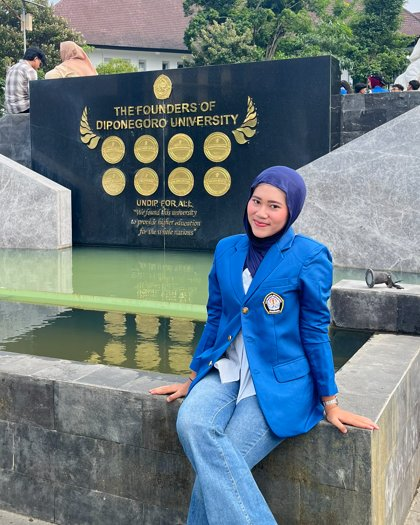

Annisa Winda Gustina
Mahasiswa Teknologi Rekayasa Otomasi di Universitas Diponegoro, dengan keahlian di bidang electrical.

Profil
Data singkat tentang saya.
- Nama lengkap
- Annisa Winda Gustina
- Status
- Mahasiswa Universitas Diponegoro
- Pendidikan
- Universitas Diponegoro Program Studi Teknologi Rekayasa Otomasi
- Domisili
- Sragen, Jawa Tengah
- Keahlian
- Electrical
Keahlian
Bidang yang saya tekuni.
- Electrical